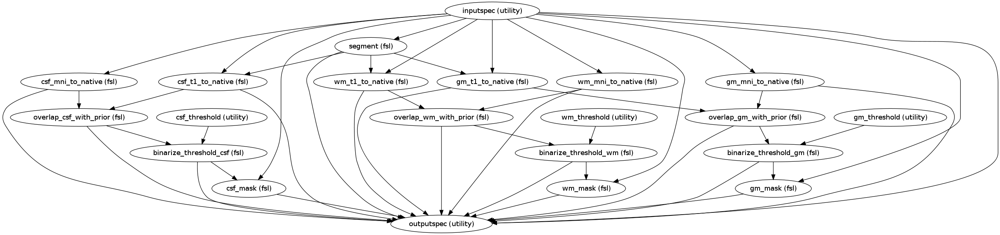

Segment the Subject’s Anatomical brain into cerebral spinal fluids, white matter and gray matter. Threshold and binarize them.
| Parameters : | None : None |
|---|---|
| Returns : | seg_preproc : workflow
|
Notes
Workflow Inputs:
csf_threshold.csf_threshold : list (float)
Threshold of Cerebral Spinal Fluid probabilities
wm_threshold.wm_threshold : list (float)
Threshold of White Matter probabilities
gm_threshold.gm_threshold : list (float)
Threshold of Gray Matter probabilities
inputspec.preprocessed_mask : string (existing nifti file)
Mask of the preprocessed functional file generated by functional preprocessing workflow.
inputspec.brain : string (existing nifti file)
Anatomical image(without skull)
inputspec.standard_res_brain : string (existing nifti file)
FSL Standard Anatomical Brain. User picks the resolution
inputspec.example_func : string (existing nifti file)
Mean functional image from the func_preproc workflow
inputspec.highres2example_func_mat : string (existing affine transformation .mat file)
File for transformation from anatomical space to functional space
inputspec.standard2highres_warp : string (existing nifti file)
Anatomical image in native space generated from the anatomical image in Standard space in the registration workflow
inputspec.PRIOR_CSF : string (existing nifti file)
FSL Standard CSF Tissue prior image , binarized with threshold of 0.4
inputspec.PRIOR_GRAY : string (existing nifti file)
FSL Standard GRAY Matter Tissue prior image , binarized with threshold of 0.66
inputspec.PRIOR_WHITE : string (existing nifti file)
FSL Standard White Matter Tissue prior image , binarized with threshold of 0.2
Workflow Outputs:
outputspec.csf_t12func : string (nifti file)
outputs CSF probabilities(in T1 space) registered to functional space
outputspec.csf_mni2func : string (nifti file)
outputs CSF probabilities(in MNI space) registered to functional space
outputspec.csf_combo : string (nifti file)
outputs Image containing overlap between csf_t12func and csf_mni2func
outputspec.csf_bin : string (nifti file)
outputs image after Thresholding and binarizing csf_combo
outputspec.csf_mask : string (nifti file)
outputs image after masking csf_combo with inputspec.preprocessed_mask
outputspec.gm_t12func : string (nifti file)
outputs GRAY Matter probabilities(in T1 space) registered to functional space
outputspec.gm_mni2func : string (nifti file)
outputs Gray Matter probabilities(in MNI space) registered to functional space
outputspec.gm_combo : string (nifti file)
outputs image containing overlap between gm_t12func and gm_mni2func
outputspec.gm_bin : string (nifti file)
outputs image after Thresholding and binarizing gm_combo
outputspec.gm_mask : string (nifti file)
outputs image after masking gm_combo with inputspec.preprocessed_mask
outputspec.wm_t12func : string (nifti file)
outputs White Matter probabilities(in T1 space) registered to functional space
outputspec.wm_mni2func : string (nifti file)
outputs White Matter probabilities(in MNI space) registered to functional space
outputspec.wm_combo : string (nifti file)
outputs image containing overlap between wm_t12func and wm_mni2func
outputspec.wm_bin : string (nifti file)
outputs image after Thresholding and binarizing wm_combo
outputspec.wm_mask : string (nifti file)
outputs image after masking wm_combo with inputspec.preprocessed_mask
outputspec.probability_maps : string (nifti file)
outputs individual probability maps (output from brain segmentation using FAST)
outputspec.mixeltype : string (nifti file)
outputs mixeltype volume file _mixeltype (output from brain segmentation using FAST)
outputspec.partial_volume_map : string (nifti file)
outputs partial volume file _pveseg (output from brain segmentation using FAST)
outputspec.partial_volume_files : string (nifti file)
outputs partial volume estimate files _pve_ (output from brain segmentation using FAST)
Order of commands:
Segment the Anatomical brain. For details see fast:
fast
-t 1
-g
-p
-o segment
mprage_brain.nii.gz
Register CSF template in T1 space to native space. For details see flirt:
flirt
-in segment_prob_0
-ref example_func.nii.gz
-applyxfm
-init highres2example_func.mat
-out csf_t12func
Register CSF template in MNI space to native space. For details see applywarp:
applywarp
--ref=example_func.nii.gz
--in=PRIOR_CSF
--warp=stand2highres_warp.nii.gz
--postmat=highres2example_func.mat
--out=csf_mni2func
--interp=nn
Find overlap between csf_t12func and csf_mni2func. For details see fslmaths:
fslmaths
csf_t12func.nii.gz
-mas csf_mni2func.nii.gz
csf_combo.nii.gz
Threshold and binarize CSF probability map
fslmaths
csf_combo.nii.gz
-thr 0.4
-bin csf_bin.nii.gz
Generate CSF csf_mask, by applying preprocessed_mask(also called global_mask) to csf_bin
fslmaths
csf_bin.nii.gz
-mas global_mask.nii.gz
csf_mask
Register WM template in T1 space to native space
flirt
-in segment_prob_2
-ref example_func.nii.gz
-applyxfm
-init highres2example_func.mat
-out wm_t12func
Register WM template in MNI space to native space
applywarp
--ref=example_func.nii.gz
--in=PRIOR_WM
--warp=stand2highres_warp.nii.gz
--postmat=highres2example_func.mat
--out=wm_mni2func
--interp=nn
Find overlap between wm_t12func and wm_mni2func
fslmaths
wm_t12func.nii.gz
-mas wm_mni2func.nii.gz
wm_combo.nii.gz
Threshold and binarize WM probability map
fslmaths
wm_combo.nii.gz
-thr 0.4
-bin wm_bin.nii.gz
Generate WM csf_mask, by applying preprocessed_mask(also called global_mask) to wm_bin
fslmaths
wm_bin.nii.gz
-mas global_mask.nii.gz
wm_mask
Register GM template in T1 space to native space
flirt
-in segment_prob_1
-ref example_func.nii.gz
-applyxfm
-init highres2example_func.mat
-out gm_t12func
Register GM template in MNI space to native space
applywarp
--ref=example_func.nii.gz
--in=PRIOR_GM
--warp=stand2highres_warp.nii.gz
--postmat=highres2example_func.mat
--out=gm_mni2func
--interp=nn
Find overlap between gm_t12func and gm_mni2func
fslmaths
gm_t12func.nii.gz
-mas gm_mni2func.nii.gz
gm_combo.nii.gz
Threshold and binarize GM probability map
fslmaths
gm_combo.nii.gz
-thr 0.4
-bin gm_bin.nii.gz
Generate GM csf_mask, by applying preprocessed_mask(also called global_mask) to gm_bin
fslmaths
gm_bin.nii.gz
-mas global_mask.nii.gz
gm_mask
Execution Graph:
Examples
>>> seg = create_seg_preproc()
>>> seg.inputs.inputspec.preprocessed_mask = os.path.abspath('/home/data/Projects/Pipelines_testing/Dickstein/subjects/s1001/func/original/rest_pp_mask.nii.gz')
>>> seg.inputs.inputspec.standard_res_brain = standard_res_brain
>>> seg.inputs.inputspec.example_func = os.path.abspath('/home/data/Projects/Pipelines_testing/Dickstein/subjects/s1001/func/original/example_func.nii.gz')
>>> seg.inputs.inputspec.highres2example_func_mat = os.path.abspath('/home/data/Projects/Pipelines_testing/Dickstein/subjects/s1001/func/original/reg/highres2example_func.mat')
>>> seg.inputs.inputspec.stand2highres_warp = os.path.abspath('/home/data/Projects/Pipelines_testing/Dickstein/subjects/s1001/anat/reg/stand2highres_warp.nii.gz')
>>> seg.inputs.inputspec.PRIOR_CSF = os.path.abspath('/home/data/Projects/C-PAC/tissuepriors/2mm/avg152T1_csf_bin.nii.gz')
>>> seg.inputs.inputspec.PRIOR_WHITE = os.path.abspath('/home/data/Projects/C-PAC/tissuepriors/2mm/avg152T1_white_bin.nii.gz')
>>> seg.inputs.inputspec.PRIOR_GRAY = os.path.abspath('/home/data/Projects/C-PAC/tissuepriors/2mm/avg152T1_gray_bin.nii.gz')
>>> seg.inputs.inputspec.brain = os.path.abspath('/home/data/Projects/Pipelines_testing/Dickstein/subjects/s1001/anat/mprage_brain.nii.gz')
>>> seg.inputs.inputspec.standard_res_brain = os.path.abspath('/usr/share/fsl/4.1/data/standard/MNI152_T1_2mm_brain.nii.gz')
>>> seg.inputs.csf_threshold.csf_threshold = [0.4]
>>> seg.inputs.wm_threshold.wm_threshold = [0.66]
>>> seg.inputs.gm_threshold.gm_threshold = [0.2]
>>> seg.get_node('csf_threshold').iterables = ('csf_threshold', [0.4])
>>> seg.get_node('wm_threshold').iterables = ('wm_threshold', [0.66])
>>> seg.get_node('gm_threshold').iterables = ('gm_threshold', [0.2])
>>> seg_preproc.run()
Returns the csf probability map from the list of segmented probability maps
| Parameters : | probability_maps : list (string)
|
|---|---|
| Returns : | file : string
|
Returns the gray matter probability map from the list of segmented probability maps
| Parameters : | probability_maps : list (string)
|
|---|---|
| Returns : | file : string
|
Returns the white matter probability map from the list of segmented probability maps
| Parameters : | probability_maps : list (string)
|
|---|---|
| Returns : | file : string
|